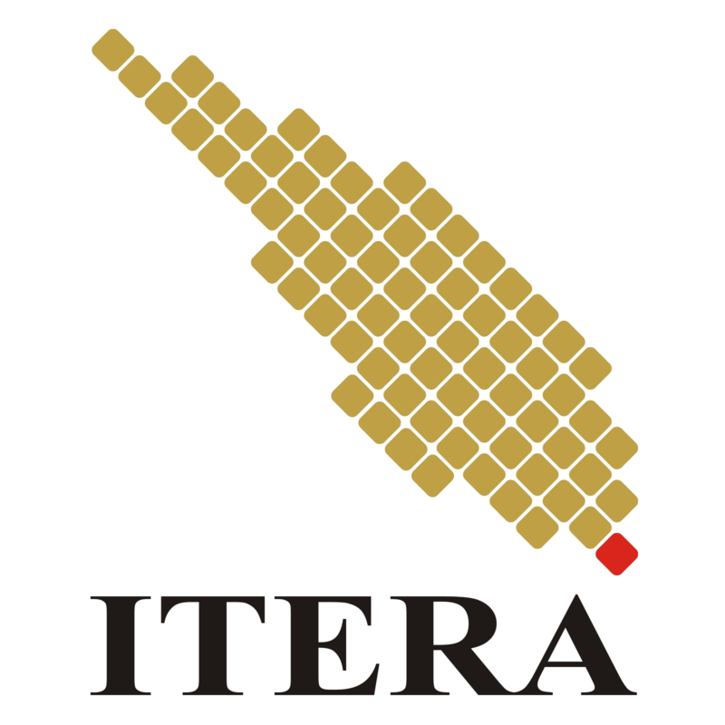

<html>
    <head>
        <title>Navbar</title>
        <link rel="stylesheet" type="text/css" href="style.css">
    </head>
</html>

<<body>
    <nav>
        <div class="logo">
            <a href="#"><br>Program Administrasi dan Manajemen Mahasiswa ITERA prodi Teknik Informatika</a>
            </div>
            <div class="toggle">
    
            </div>
            <ul class="menu">
                <li><a href="UTSpage2.html">Halaman Formulir </a></li>
                <li><a href="UTSpage3.html">Halaman Tabel</a></li>
            </ul>
    </nav>  
    
    <br>
    <div id="container">
        <div class="item"><h1>Tentang Website</h1>
            <p>Website ini adalah website manajemen dan administasi mahasiswa teknik informatika ITERA.</p>
            <p>Website ini terdiri dari halaman formulir data mahasiswa dan data  mahasiswa ditampilkan dengan tabel dan data dummy.</p>
            <center>
    </div>

    
        <style>
            footer {
                text-align: center;
                background-color: #333;
                color: #fff;
                padding: 10px;
                border: 2px solid #fff;
        </style>
        <footer>
            &copy; 20 Oktober 2023 Tamara Dwi Rahmadhona
        </footer>
 